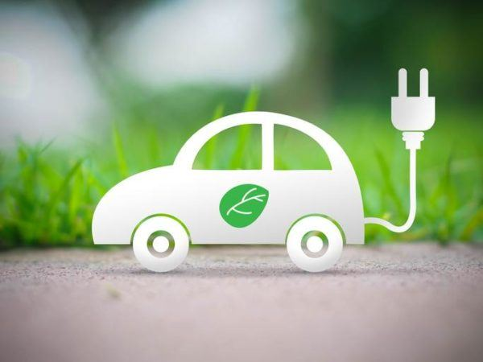
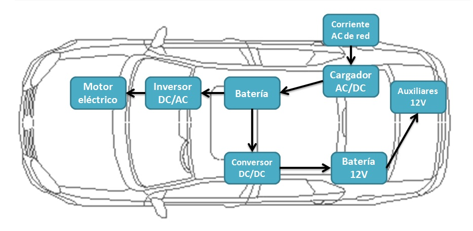
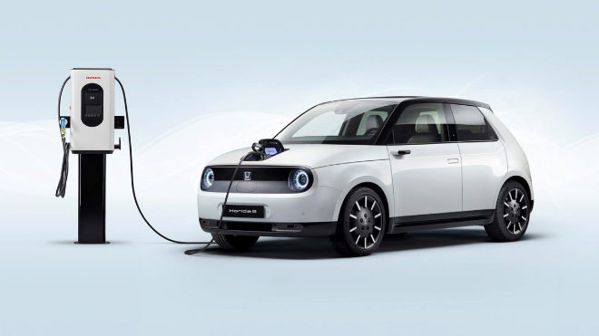

¡Algunas funciones para adentrarse al mundo señores!
Un coche eléctrico funciona con un motor eléctrico, en lugar de un motor de gasolina. Cuando se arranca el coche eléctrico, el controlador toma la energía de las baterías y la envía al motor eléctrico. El motor eléctrico convierte la energía eléctrica en energía mecánica, que mueve las ruedas del vehículo. Estas baterias que funcionan como motor son recargables, están situadas en la parte inferior del vehículo o en determinados casos en la parte del maletero. El resto del exterior del coche es completamente igual que un coche de motor de gasolina, lo único que no tiene un vehículo eléctrico es el sistema de escape.
Vehículo recargando en foto animada
Plano de las partes del vehículo
Un ejemplo de uno de nuestros vehículos recargando
¡Estas son algunas ventajas de tener uno de nuestros modernos coches eléctricos!